Japan / Yamaguchi / Suoooshima
Suoooshima
Suoooshima · Yamaguchi
Suoooshima
Highlighted on the Yamaguchi map.
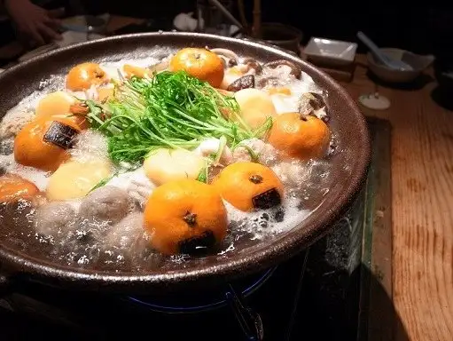
Dining
瀬戸内ジャムズガーデン
瀬戸内ジャムズガーデン
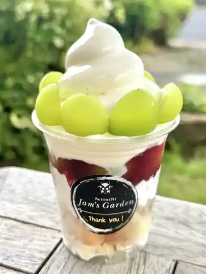
たちばなや食堂
たちばなや食堂
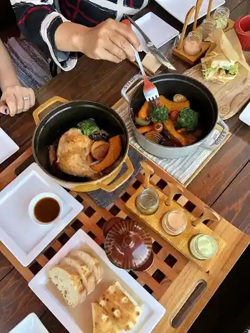
リ セト
リ セト
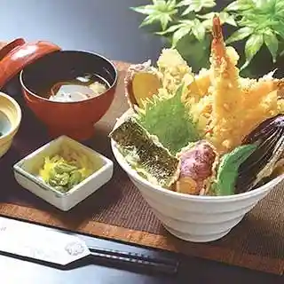
お侍茶屋 彦右衛門
お侍茶屋 彦右衛門
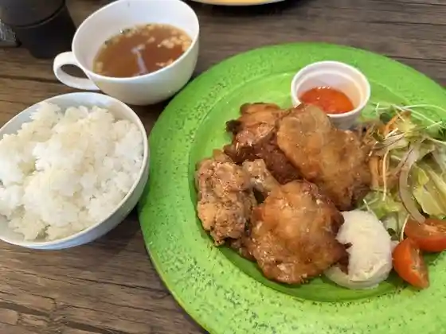
ALOHA ORANGE 2nd
ALOHA ORANGE 2nd
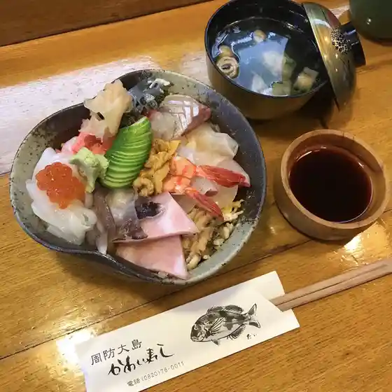
料理旅館 かわい寿し
料理旅館 かわい寿し
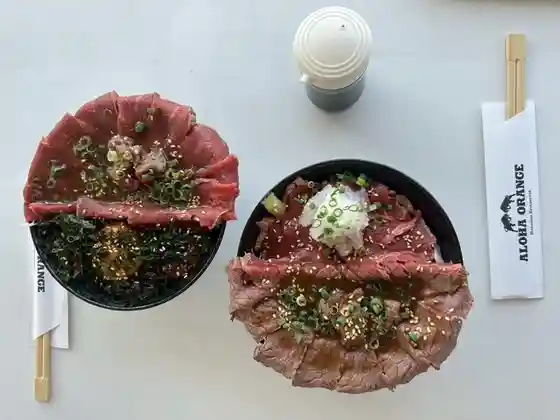
アロハオレンジ 本店
アロハオレンジ 本店
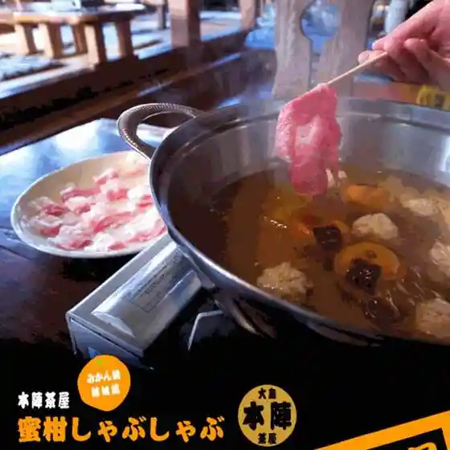
大島本陣茶屋
大島本陣茶屋
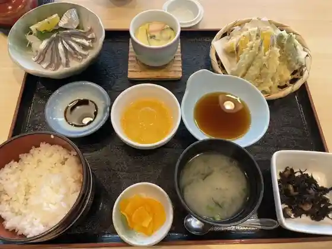
道の駅 サザンセト とうわ レストラン
道の駅 サザンセト とうわ レストラン
食在周防あらかわ
食在周防あらかわ
竜崎温泉 ちどり
竜崎温泉 ちどり
道の駅 サザンセトとうわ 売店
道の駅 サザンセトとうわ 売店
島のカンボジア料理 オークン
島のカンボジア料理 オークン
MARISSA RESORT sazanseto suo-oshima
MARISSA RESORT sazanseto suo-oshima
パンコッペ シーブリーズ店
パンコッペ シーブリーズ店
カフェ・ミサキ
カフェ・ミサキ
パワービーチ
パワービーチ
幸進堂
幸進堂
サルワーレ 周防大島店
サルワーレ 周防大島店
鮨くぼ田
鮨くぼ田
みかちゃんラーメン
みかちゃんラーメン
遊食酒房 ちどり本店
遊食酒房 ちどり本店
グリルANCHOR
ANCHOR
石窯カフェ レストラン さぶろう亭
石窯カフェ レストラン さぶろう亭
サフラン
サフラン
iiiro
iiiro
春夏冬
春夏冬
城山食堂
城山食堂
桜波夏
桜波夏
粗挽き十割そば ふく朗
粗挽き十割そば ふく朗
旬菜 由乃
旬菜 由乃
MIKKE
MIKKE
Grand cafe SEA BREEZE 1976
Grand cafe SEA BREEZE 1976
レストラン・グリーンガーデン
レストラン・グリーンガーデン
カサハラ ハニー
カサハラ ハニー
周防大島 お寺カフェ
周防大島 お寺カフェ
大島スイーツ工房ゆーたん
大島スイーツ工房ゆーたん
のち
のち
MINAPA COFFEE
MINAPA COFFEE
海カフェ Cachette
Cachette
つるや
つるや
お好焼まきちゃん
お好焼まきちゃん
城山製パン
城山製パン
島たこ ショウちゃん
島たこ ショウちゃん
本格手打ち 一心うどん 泉本屋
本格手打ち 一心うどん 泉本屋
ジョイ ナス
ジョイ ナス
もつ鍋 濵勝
もつ鍋 濵勝
中川鮮魚店
中川鮮魚店
プリンのお店k-site
k-site
パララン
パララン
旅籠 くぬぎ亭
旅籠 くぬぎ亭
COFFEE コナ with FINE FOODS
COFFEE with FINE FOODS
いっせい
いっせい
海ぞい食どう にくきゅう
海ぞい食どう にくきゅう
ピーカンスイーツファクトリー
ピーカンスイーツファクトリー
fish & oyster bar La Verite
fish & oyster bar La Verite
エッセンス
エッセンス
ながや菓子工房
ながや菓子工房
Cafe de Costa Rica
Cafe de Costa Rica
鮨や大将 うみべ
鮨や大将 うみべ
瀬戸内花嫁たい焼き
瀬戸内花嫁たい焼き
伊川製菓
伊川製菓
MATCHA-STAND TACHIBANA
MATCHA-STAND TACHIBANA
餅匠かわた
餅匠かわた
ULL i m
ULL i m
瀬戸内パーラー
瀬戸内パーラー
江戸風手打ちそば うずしお亭
江戸風手打ちそば うずしお亭
ガーデンカフェ リバージュ
ガーデンカフェ リバージュ
AMERICAN STANDARD
AMERICAN STANDARD
漁家民宿 洸洋庄
漁家民宿 洸洋庄
周防大島お魚センター
周防大島お魚センター
サロン ふきのとう
サロン ふきのとう
スパゲッツパンチ
スパゲッツパンチ
クレストオブザウェイブ立岩
クレストオブザウェイブ立岩
サンサンガーデン
サンサンガーデン
Corvo fine
Corvo fine
島の恵み 本店
島の恵み 本店
Erin
Erin
Aria
Aria
大師堂喫茶室
大師堂喫茶室
HILO BAKERY
HILO BAKERY
お好み焼き しずちゃん
お好み焼き しずちゃん
果子乃季 大島店
果子乃季 大島店
嶋津鮮魚店
嶋津鮮魚店
cafe わたの花
cafe
石鍋亭
石鍋亭
割烹 味彩
割烹 味彩
金ねこ
金ねこ
Haukalima HOSSY
Haukalima HOSSY
ごはんや 心
ごはんや 心
小さな宿 いずい食堂
小さな宿 いずい食堂
東和鮮魚
東和鮮魚
野菜レストラン Valo
野菜レストラン Valo
まるいち
まるいち
オイシーフーズ
オイシーフーズ
はちとひとと
はちとひとと
七転八起
七転八起
こじまジャム工房
こじまジャム工房
ma-lu
ma-lu
ありが島 海の家
ありが島 海の家
海辺の宿 にくきゅう
海辺の宿 にくきゅう
Boulangerie SAZABE
Boulangerie SAZABE
Cafe 奈々々萌
Cafe
漁家民宿 かささ
漁家民宿 かささ
うかしま市場食堂
うかしま市場食堂
セブンイレブン 周防大島久賀店
セブンイレブン 周防大島久賀店
気ぶん屋
気ぶん屋
こむぎダイニング なかや
こむぎダイニング なかや
マルキュウ 大島小松店
マルキュウ 大島小松店
SEAGULL
SEAGULL
セブンイレブン 山口大島橘店
セブンイレブン 山口大島橘店
うどん前小島
うどん前小島
PIKKU PIILO
PIKKU PIILO
お惣菜こどまり
お惣菜こどまり
周防大島 T Bird
T Bird
旅館 浮島荘 まつなか
旅館 浮島荘 まつなか
Ｙショップ 三蒲店
Yショップ 三蒲店
LAWSON 周防大島店
LAWSON
Aコープ 東和店
Aコープ 東和店
日の出丸 めでたい
日の出丸 めでたい
中央フード 大島店
中央フード 大島店
せとうち つなぐキッチン 郷の家
せとうち つなぐキッチン 郷の家
Crest of the Wave Tateiwa
Crest of the Wave Tateiwa
Re Seto
Re Seto
Suooshima Fish Center
Suooshima Fish Center
Restaurant Green Garden
Restaurant Green Garden
Ryuzaki Onsen Chidori
Ryuzaki Onsen Chidori
Setochi Jam s Garden
Setochi Jam s Garden
Aloha Orange
Aloha Orange
Oshima Honjin Chaya
Oshima Honjin Chaya
Power Beach
Power Beach
Saruware
Saruware
Tachibanaya Shokudo
Tachibanaya Shokudo
Tsuruya
Tsuruya
O Kun
O Kun
Oshokujidokoro Kei
Oshokujidokoro Kei
Sazanseto Towa Shokudo
Sazanseto Towa Shokudo
Mikachan Ramen
Mikachan Ramen
Akinai
Akinai
Okonomiyaki Makichan
Okonomiyaki Makichan
Anago No Sakae
Anago No Sakae
Kiri
Kiri
Adagio
Adagio
Joyama Shokudo
Joyama Shokudo
Fumiya
Fumiya
Okonomiyaki Michan
Okonomiyaki Michan
Nochi
Nochi
Gardencafe Rivage
Gardencafe Rivage
Chidori Honten
Chidori Honten
Issei
Issei
Nonbiri Cafe
Nonbiri Cafe
Salon Fukinoto
Salon Fukinoto
Genki Ya Nagomi
Genki Ya Nagomi
Obiko
Obiko
Yosuko Hanten
Yosuko Hanten
Muraki Ryoriten
Muraki Ryoriten
Cafe Cordoba
Cafe Cordoba
Chuka Soba Dandan
Chuka Soba Dandan
Cafe Restaurant Join Us
Cafe Restaurant Join Us
Yamato
Yamato
New Puerto
New Puerto
Takoyakitatchan
Takoyakitatchan
Shokuzai Suo Arakawa
Shokuzai Suo Arakawa
Wa
Wa
Karaoke No Sato Shizuka
Karaoke No Sato Shizuka
Kappo Ajisai
Kappo Ajisai
Setouchiso Yamamoto Annex
Setouchiso Yamamoto Annex
Uoshin
Uoshin
Marugame Shokudo
Marugame Shokudo
Azuma Shokudo
Azuma Shokudo
Sakuranbo
Sakuranbo
Restaurant Hama
Restaurant Hama
Essence
Essence
Kitchen Caffe Cocoro
Kitchen Caffe Cocoro
Saffron
Saffron
Izakaya Masa
Izakaya Masa
Stay
Guest Room Kanda
Guest Room Kanda
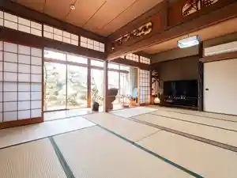
グランピングリゾート大島
グランピングリゾート大島
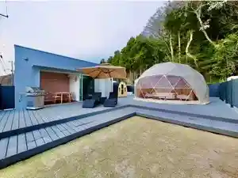
ゲストハウス 奈々々萌
ゲストハウス 奈々々萌
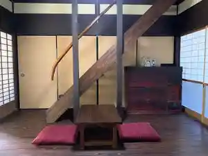
千鳥本店
千鳥本店
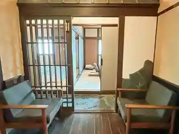
あそびのシーテラス
あそびのシーテラス
グランピングリゾートOTOHA
グランピングリゾートOTOHA
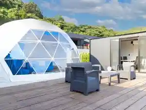
ゲストハウス星風
ゲストハウス星風
グローバルリゾート周防大島
グローバルリゾート周防大島
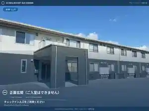
セトノウツツ
セトノウツツ
せとうちアイランドステイズ周防大島
せとうちアイランドステイズ周防大島
マリッサリゾート サザンセト周防大島
マリッサリゾート サザンセト周防大島
Beachfront Cabin
Beachfront Cabin
Sights
Suoooshima (Yashiro Shima)
Sananomiya Shima (Enjierurodo)
Katazoegahama Seaside Park (Beach Oto Campground)
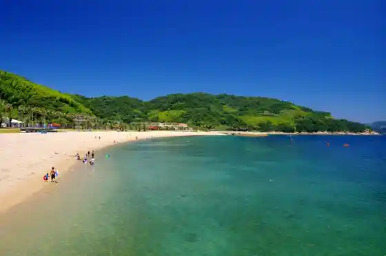
Suoooshima no Mikan Kari
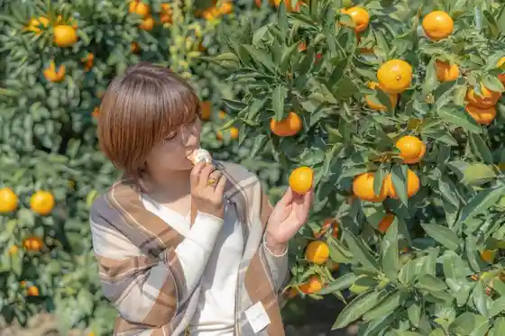
Oshima Bridge
Nagisa Aquarium
Michinoku Memorial Museum (Michinoku Memorial Park)
Hoshi no Beach
Gi Ken Yashikiato Asagimadara Sono
Gan Mon
Shi Iwago Wase Kigan (Shiawase Kigan)
Roadside Station Sazanseto Towa
Suoooshima Mikan Nabe
Suse
Tateiwa
Ryugasaki Onsen
Monju Yama Monju Do
Kochi Zu Wo Katate Ni, Machiwo Aruko U Kikangentei Kochi Zu Uoku Seian Shita Sho (Suoooshima)
Hoshino Tetsuro Memorial Museum
Iwaya (Iwaya Gongen)
Obi Ishi (Obi Ishi Kannon)
Katazoegahama Onsen
Yashiro Damu Park
Tokutoku Oshima
Bii Gyokukai Kishi Beach
Katazoegahama Seaside Park Oto Campground (Koteji no Mi)
Tachiuo no Kagami Mori
Seishonen Ryoko Village Campground (Zushigahama Campground)
Sho Minami Beach
Suoooshima Sho Seki no Kawazu Sakura
Suoooshima Yasohachi Ka Tokoro (Shima Henro)
Suoooshima Bunka Koryu Center
Nippon Hawai Imin Museum
Zushigahama Beach
Kuka Folk History Museum Hachiman Shogaigakushu no Mura
Seto Park
Gojo Sembonzakura
Meigetsu Shonin Tanjo Chi (Gangyo Tera)
Shi Sakai no Yaku Hogekisen Ato
Suoooshima Kanko Boranteia Gaido no Kai
Matsuo Tera (Mokuzo Ni Ten'o Ritsuzo)
Kuka no Ishiburo
Gen Meisan
Meijiishin Hyakunen Memorial Park
Ozu Tetsu Zen Seitan no Chi
Shi Tsu Ko Shima
Suo Totsui Razu Kannon
Monju Yama Suse Kano Yama Gen Meisan Haikingukosu
Shi Sakai no Yaku Oshima Kuchi Senseki Hi
Otomo Taiken Gen
Narasaki Tsuyoshi Juro Seitan no Chi
Osaki Hana Coast
Monju Yama Kano Yama Haikingukosu
Choju no Mori Promenade (Suse Forest Park)
Kano Yama
Ryugasaki Promenade
Sho Chi Burial Mound
Suoooshima Town Hall